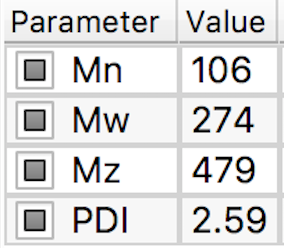

MWD Discretization¶
The number average, weight average and polydispersity index, \(M_n\) , \(M_w\) and \(\text{PDI}\), respectively, of the original data are calculated and reported into the file parameters panel:
 where\[\begin{split}M_n &= \dfrac{1}{\sum_i w_i/M_i} \\ M_w &= \sum_i w_i M_i \\ \text{PDI} &= \dfrac{M_w}{M_n}\end{split}\]
where\[\begin{split}M_n &= \dfrac{1}{\sum_i w_i/M_i} \\ M_w &= \sum_i w_i M_i \\ \text{PDI} &= \dfrac{M_w}{M_n}\end{split}\]The theory parameters panel shows these values for the discretized distribution: .
The area, \(\phi_i\), of each greay bin corresponds to the area under the data curve delimited by the bin edges. The height, \(h_i\) of the bin is the area divided by the bin width (on a \(\log_{10}\) scale).
You can change the number of bins and move the bin edges by dragging the yellow markers.
In the bottom of the plot, the grey tick marks indicate the bin molecular weight taken as the weight-average molecular mass value across the bin width
\[M_{w,i} = \frac{\sum w_j M_j}{\sum w_j}.\]
{kind=link}
To save the discretized molecular weight, click the
 button.
button.The output file contains a header with the moments \(M_n\), \(M_w\) and the PDI, and two columns. The first column is the molecular weight \(M_{w,i}\) as indicated by the grey tick marks, the second column is the value of the area of the covered by the bin, \(\phi_i\).
The sum of the areas should equal 1:
\[\sum \phi_i = 1.\]